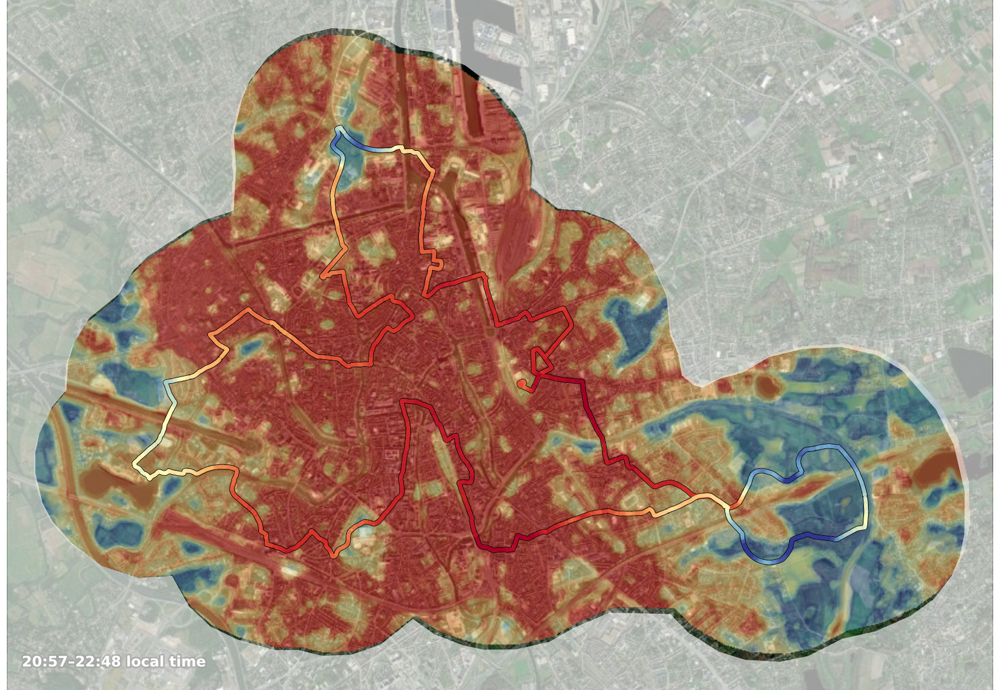

Heat Mapping Campaign
Picture: Ghent traverse campaign — ML-predicted temperature (raster) with the recorded routes outlined on top, one shared °C scale.
Bike- or car-mounted sensors trace a city's streets during a heat event, logging time-drift-corrected air temperature every few metres. A land-cover-aware ML model then predicts temperature everywhere in between, turning a handful of routes into full spatial coverage.
Strengths & innovation
- Ground-truthedReal, calibrated street-level readings — not a satellite proxy for air temperature.
- Fast to deployA single traverse campaign covers a whole city in a few hours per time-of-day.
- ML-filled coverageLand-cover and built-form features predict temperature between and beyond the routes driven.
- Model validated against realityPredicted and recorded values share one colour scale, so agreement — or disagreement — is visible at a glance.
“A satellite gives you surface temperature; a traverse campaign tells you what people actually feel walking down the street.”
Demo
A real traverse campaign: every recorded point (time-drift-corrected, "smoothed") plus the ML-predicted temperature raster filling the study area, both on one shared °C scale. Toggle each layer independently to compare model against ground truth.
Loading demo data…
Free request
No free request for this product — a traverse campaign requires field deployment. Discuss a campaign →